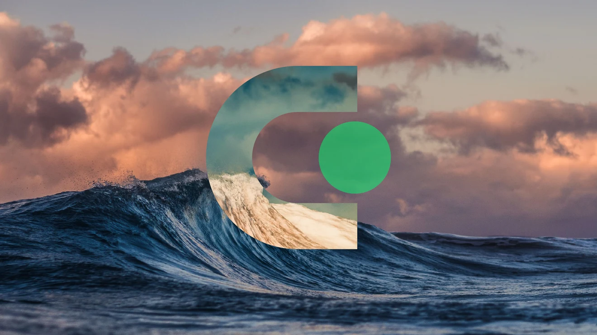
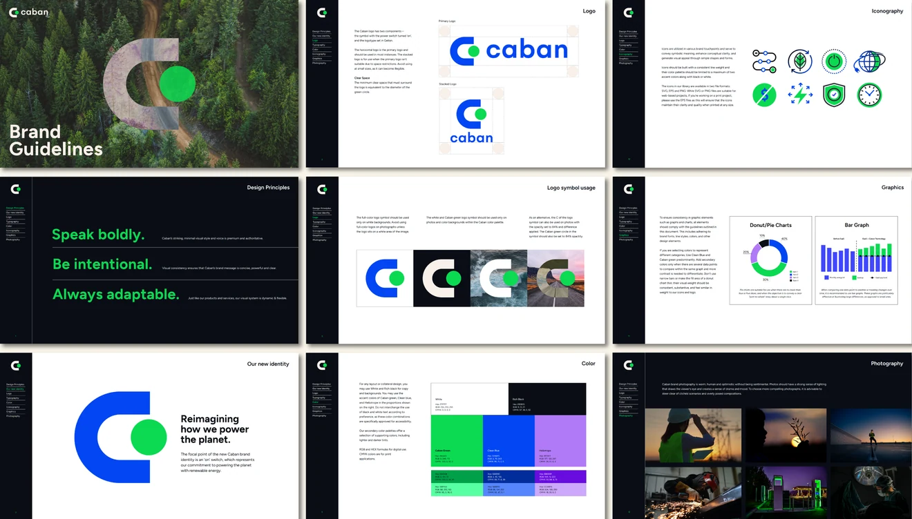
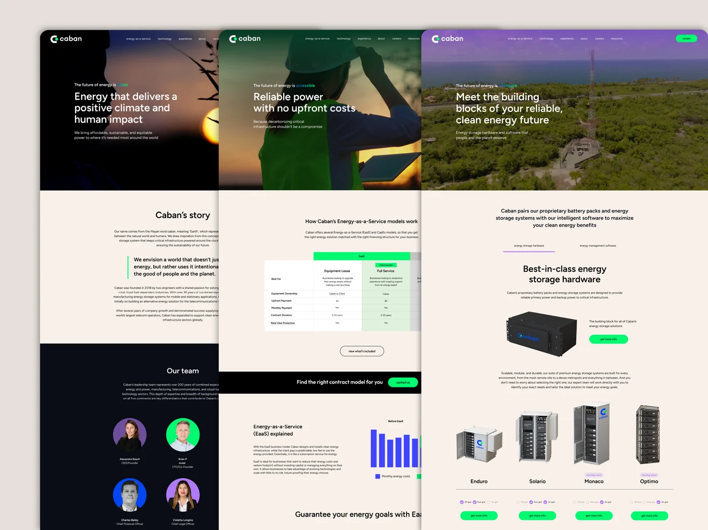
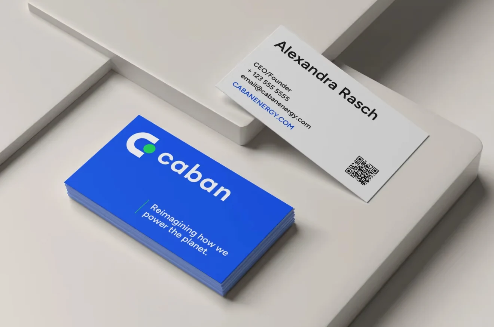
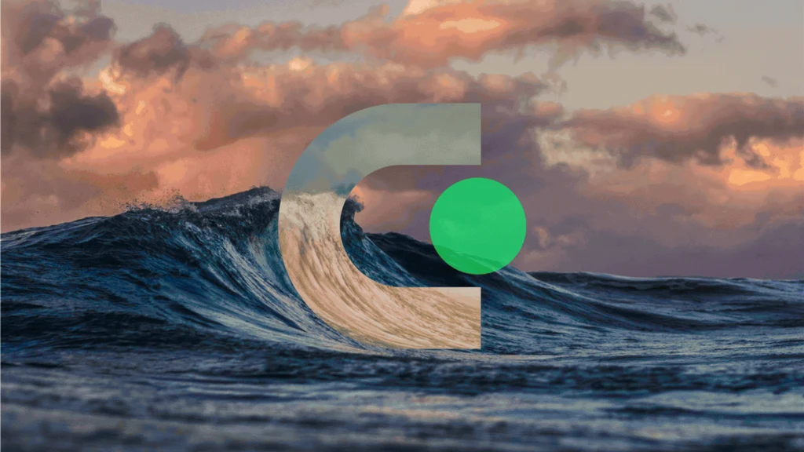
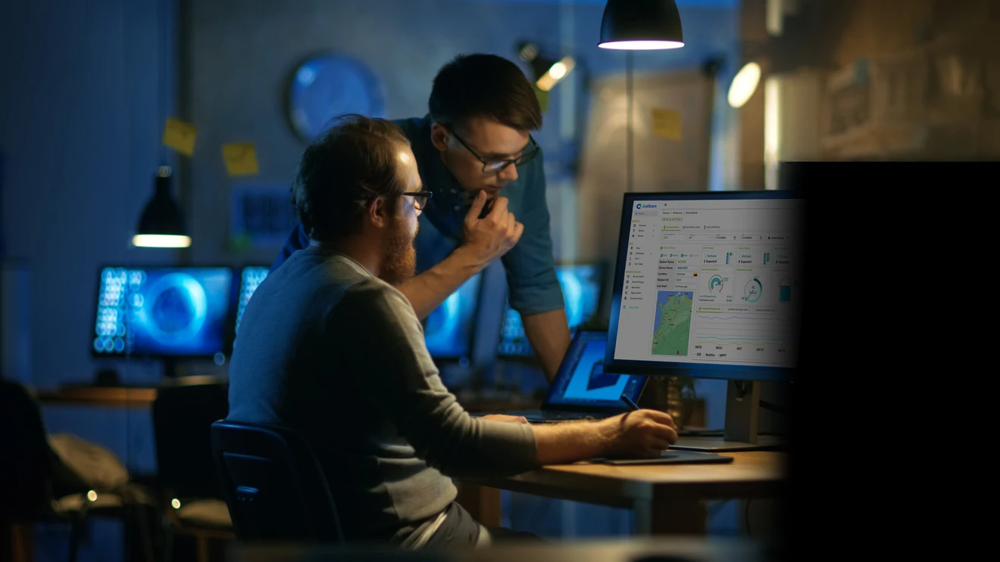

Caban Energy
Caban needed a visual identity that could communicate the sophistication of its technology and the scale of its ambitions. Working as part of the DG+ team, I designed a new brand identity centered on a simple on-switch symbol, supported by a flexible visual system, vibrant colors, and photography that brought a human perspective to complex energy technology. The identity extended across the new website and other brand touchpoints, giving Caban a more cohesive, confident presence as it continued to grow.

Powered On
In our early discovery interviews, Alex Rasch, Caban’s founder and CEO, told us that when she was deciding what kind of company she wanted to build, she knew she wanted it to involve something that touches people’s lives every day, like turning on the lights.
That got me thinking about a switch turned on, powered by Caban. The large C became the body of the switch, with the green circle indicating that the power is on. It’s a simple way to communicate what Caban makes possible. The symbol is paired with a wordmark typeset in Gelion.



“The refreshed look didn’t just elevate how we show up visually - it created a major commercial awareness of us.”




